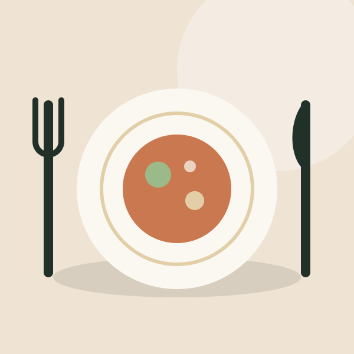

Création de site / restaurant / Lille
Donnez envie avant la première bouchée.
Une carte facile à consulter sur téléphone, des horaires clairs et un chemin court vers la réservation. Votre site prolonge l’expérience de votre établissement.
Voir notre site démo restaurantUn site utile à votre métier
De la clarté.
Du premier clic au contact.
- Une carte lisible et facile à mettre à jour
- Horaires, adresse et accès sans chercher
- Photos autorisées de votre cuisine et de votre lieu
- Réservation ou demande de table selon votre organisation
Un studio basé à Lille, avec des échanges directs pour cadrer votre projet et accompagner sa mise en ligne.
L’exemple présenté est une maquette fictive. Les textes, tarifs, photos et engagements sont adaptés à votre entreprise après validation.
Restauration · Lille
Le goût des bons moments.
Une cuisine à découvrir, un lieu où se retrouver. Bienvenue chez Maison Auguste à Lille.

L’UNIVERS DEMaison Auguste
Vos questions, côté métier.
Peut-on afficher une carte sans PDF ?＋
Oui, une carte en texte s’adapte mieux au mobile et facilite la lecture. Un PDF peut rester disponible en complément.
La réservation est-elle incluse ?＋
Le formulaire de demande fait partie du cadrage. Une connexion à un outil de réservation peut nécessiter une option et un abonnement tiers.